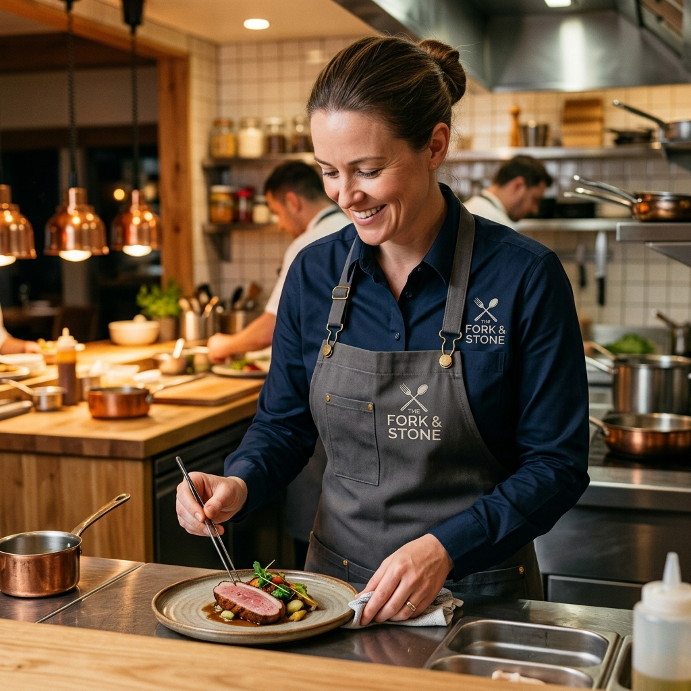

La comida conquista. El ambiente enamora. La imagen hace que vuelvan.
Cualquier restaurantero del Istmo lo sabe: puedes tener el mejor mole negro de Juchitán, los camarones más frescos de Salina Cruz o el café más aromático de Tehuantepec. Pero si tu personal atiende sin uniforme, o con uno desgastado, estampado y sin identidad, algo se rompe en la experiencia del cliente.
La gastronomía no es solo sabor. Es experiencia completa. Y la imagen de tu equipo — desde el chef en la cocina hasta el mesero que lleva la cuenta — es parte fundamental de esa experiencia. Un uniforme bien hecho, con tu logo bordado con precisión, comunica: "Aquí tomamos todo en serio, incluyendo los detalles."
Y son exactamente los detalles los que hacen que un cliente regrese.
El Paquete de Identidad para tu Negocio Gastronómico
En Bortex hemos trabajado con restaurantes, cafeterías, fondas y hoteles de la región del Istmo. Conocemos las necesidades del sector: prendas que aguanten el trabajo intenso de cocina, el calor del Istmo, las lavadas diarias y los años de servicio. Aquí te presentamos los artículos clave que bordamos para el sector gastronómico:
👨🍳 Filipinas para Chefs: Elegancia en la Cocina
La filipina de chef no es solo un uniforme — es el símbolo de autoridad en la cocina. Un chef con filipina blanca y su nombre bordado en el pecho proyecta dominio, profesionalismo y pasión por el oficio.
- Nombre del chef bordado: En el lado izquierdo del pecho, en tipografía elegante y legible.
- Logo del restaurante: En el pecho derecho o al centro del bolsillo.
- Cargo o especialidad: "Executive Chef", "Chef Pastelero", "Sous Chef" — bordado discreto que define jerarquías.
- Colores institucionales: Filipinas en blanco, negro, gris o los colores de tu marca.
Bordamos sobre filipinas de algodón, popelina, gabardina y telas especiales resistentes al calor. La prenda que resiste los turnos más intensos merece un bordado que también los resista.
⚓ Mandiles de Lona o Mezclilla para Meseros: Resistencia con Estilo
El mandil del mesero está en primera línea: carga platos, limpia mesas, aguanta roces, salpicaduras y un ritmo de trabajo que no para. Necesita ser resistente, presentable y con identidad de marca.
- Logo del restaurante al centro: El punto focal del mandil — lo primero que el cliente ve cuando el mesero se acerca.
- Nombre del mesero: En la parte superior o en una tira lateral, para personalización y servicio más cercano.
- Materiales de trabajo: Bordamos sobre lona gruesa, mezclilla, gabardina encerada y poliéster resistente a manchas.
- Distinción por rango: Un color diferente o una posición diferente del logo para jefes de meseros vs. asistentes.
El bordado en mandiles de trabajo es especialmente duradero porque se aplica sobre telas gruesas — la puntada tiene más superficie de agarre y no se desgasta con la rutina diaria.
🍽️ Servilletas de Tela Bordadas: El Toque de Lujo
Esta es, quizás, la decisión de imagen que más impacto tiene en la percepción de un restaurante y que menos restaurantes hacen: bordar el logo en las servilletas de tela.
Cuando el cliente llega a su mesa y encuentra una servilleta de tela doblada con elegancia — y al desplegarla aparece el logo de tu restaurante bordado discretamente en una esquina — sucede algo: siente que está en un lugar especial. No en una fonda cualquiera, sino en un establecimiento que cuida cada detalle.
- Logo en esquina o al centro: Discret o protagónico, según el estilo de tu marca.
- Iniciales o nombre del restaurante: En tipografía elegante, estilo bistró o monograma.
- Bordes decorativos: Marcos, líneas o motivos geométricos que enmarcan el logo.
- Telas recomendadas: Lino, algodón mercerizado, manta fina — telas que permiten un bordado limpio y presentable.
Producimos desde 50 hasta miles de servilletas idénticas. El mismo logo, los mismos colores, la misma posición — en cada una.
☕ Para Cafeterías y Hoteles
- Delantales para baristas: Logo de la cafetería + nombre del barista. El uniforme perfecto para una cafetería de especialidad.
- Uniformes de recepción de hotel: Logo del hotel bordado en camisas, blazers o chalecos del personal de front desk.
- Gorras de cocina: Para el personal de análisis repostería y panadería, con escudo del negocio.
- Toallas y paños de cocina: Con el logo del establecimiento para uso en barra y cocina.
¿Por Qué Bordado y No Estampado para tu Negocio?
En el sector gastronómico hay una regla que nadie te enseña pero todos aprenden a las malas: el estampado no sobrevive la cocina.
- Lavados industriales a altas temperaturas: Los estampados se cuartean y se desprenden. El bordado digital aguanta ciclos de lavado de 60–90°C sin perder un hilo.
- Detergentes agresivos: Los desengrasantes y desinfectantes de cocina destruyen los estampados en pocas semanas. Los hilos de poliéster industrial son resistentes a estos productos.
- Fricción constante: El roce de delantales, trapos y superficies de cocina desgasta el estampado. El bordado está cosido en la tela — no se puede despegar por fricción.
- Imagen de calidad: Un logo bordado se ve premium. Un logo estampado que empieza a descascararse da exactamente la imagen contraria.
Cuando inviertes en uniformes bordados para tu restaurante, estás invirtiendo en que tu imagen siga viéndose bien dentro de 2 años, no solo en la primera semana.
"El detalle del bordado en tu mantelería y uniformes es lo que separa a un restaurante del montón de uno que se recuerda."
¿Cómo Empezamos?
- Paso 1: Mándanos el logo de tu negocio en la mejor calidad que tengas (PNG, JPG, PDF o vectorial).
- Paso 2: Lo digitalizamos y te enviamos una simulación del bordado para tu aprobación.
- Paso 3: Defines qué prendas y cuántas piezas necesitas.
- Paso 4: Producimos, empacamos y entregamos — listos para estrenar en tu próximo turno.
🍴 ¿Listo para renovar la imagen de tu restaurante?
Cotiza tu paquete de filipinas, mandiles y servilletas bordadas con el logo de tu negocio. Tu equipo se verá profesional desde el primer día. ¡Cuéntanos tu idea!
Cotizar por WhatsApp Cotizar en línea